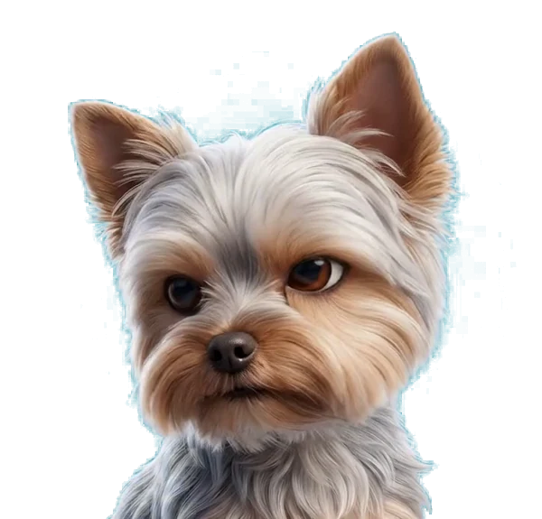

Mueve el cursor por toda la ventana. Los tres reciben la misma posición al mismo tiempo. Haz clic en un panel para verlo solo; clic otra vez para volver. Prueba sobre todo las diagonales y las esquinas.
Siete clips, uno por dirección, todos desde la misma pose base. El radio se elige por el ángulo del cursor. Falta abajo-derecha: ahí manda el vecino más cercano.
Una sola imagen recortada, girada en 3D con CSS. Continuo en los dos ejes, pero es un plano.

HORIZONTAL + VERTICAL cruzados por opacidad. Está aquí como control, para ver el fantasma.